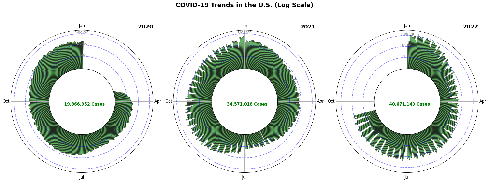

Reading & Critique

Insights about the data/visualization:
- There is a general increase in Covid-19 cases from 2020 to 2022
- There are less confirmed cases of Covid-19 during the Summer and more during the Winter months/ beginning of the year.
- Projected to be a huge increase in cases in January 2022, larger than anytime before.
Design Critique:
Key Visual Encodings:
- Position on a Common Scale: The black line serves as a good reference point, helping to distinguish high case numbers from low ones.
- Area: The general magnitude of cases is effectively communicated by the red-colored area in each segment.
- Curvature: The spiral layout reduces space for older time periods, prioritizing newer data. This helps emphasize future trends while still showcasing historical patterns. However, this layout may make the visualization difficult to interpret at first.
- Continuity: The smooth transitions in the area shape effectively highlight increases and decreases in case numbers over time. A spiky visualization (by using the real data) could have been harder to follower.
- Color: The use of red to represent case volume is intuitive: more red visually signals a worsening situation.
Is Important Data Easily Seen, or Is It Unnecessarily Hidden?
While the visualization effectively highlights overall trends, estimating exact case numbers can be challenging in certain areas. Specifically, when the cross-section of the visualization exceeds the 150k reference in the legend, it becomes difficult to determine the precise case count. This raises questions such as: Will cases double in January? How much higher will they go?
Despite this limitation, the visualization successfully conveys the **general trend of COVID-19 cases over time**. The fluctuations and surges are clearly visible, making it easy to understand how cases have evolved. However, for those needing precise numerical estimates, additional reference points or a more detailed legend may be necessary.
Are the Takeaway Messages for the Intended Audience Clear and Crisp?
The main takeaway that COVID-19 cases are increasing and will dramatically rise in January is effectively communicated. However, the visualization does not address the issues made in the article such as the potential impact of this surge, such as hospital overload or severity of cases.
Are Elements Appropriately Titled or Labeled?
- 7-Day Average: The labeling of the 7-day average is somewhat confusing. While it helps smooth trends, its placement does not clearly indicate how it is calculated, making it less intuitive.
- Terminology: The visualization should explicitly mention "Omicron" instead of just referring to COVID-19 in general.
- Directional Guidance: The arrows next to each year are a helpful addition, guiding viewers in the correct reading direction.
- Month Labels: While months are labeled, having more frequent labels would reduce the need for users to mentally calculate gaps between months.
Is There Appropriate Spacing, Layout, and Legible Type?
The spacing between years is consistent radially, ensuring that different time periods remain distinguishable. This stacking effect makes it clear which year is being viewed. However, the origin of the visualization does not hold much significance, and its placement could be reconsidered to improve overall clarity.
Is It Clear Where to Begin Reading the Design?
Since the visualization is circular, the natural focal point is the center. The added arrows guide readers through the data in the correct direction, making it clear how to interpret the timeline.
Is the Target Audience Likely to Understand the Visualization?
I think the visualization will be appreciated by the visualization community but ultamtely fall short of being understamdbale to most people just due to how unique its structured.
Visualization Sketches
Design Rationale for Sketch 1:
- Unrolled the original visualization to allow for a more natural left-to-right reading flow, making interpretation easier.
- Enhanced Y-axis readability to give readers better access to the exact number of cases, providing a clearer sense of how COVID-19 case numbers fluctuated over time.
- Added a marker at the end of the data (January 2022) to help readers get a clear sense of the current state of the virus.
- Used months as the X-axis and represented each year as its own distinctly colored line, allowing readers to still catch any trends across different seasons and months.
- Eliminated distortion seen in the original design, where some years were more compressed than others. Now, each year displays the same amount of information in the same amount of space.
- Continuity between years was disrupted since the end of 2020 does not visually connect to the start of 2021, removing the seamless flow present in the original visualization.
- The visualization is less visually striking than the original due to its standardized format, making it more functionally clear but less eye-catching.
- For future iterations, I plan to explore ways to preserve continuity while maintaining clarity.
Design Rationale for Sketch 2:
- The main goal of this sketch was to keep the simplicity of the first sketch but maintain the continuity between years from the original.
- For each year, the baseline position is changed to be the number of average daily cases at which the previous year ended. This approach has two main benefits:
- It emphasizes how each year is getting worse.
- It allows users to compare changes across seasons and months. For example, from each baseline at the beginning of the year (January), there is always a visible spike.
- Added spaces between each year largely to add redundancy and ensure users understand they are different years, but there may be some other effects:
- One drawback might be that the spaces are viewed as missing data.
- One potential side benefit is that it could help reduce the sudden spike effect seen between December and January mentioned in the article caused by the delay in reporting around Christmas.
- A drawback is that it becomes harder to show more granular monthly data compared to sketch 1, since you have to fit 36 months on the x-axis rather than 12.
- Still not as visually striking as the original design, so the next sketch will focus on being more striking.
Design Rationale for Sketch 3:
- With this sketch, I wanted to create a more striking visual.
- The circular layout and growing "spokes" resemble the shape of the COVID-19 virus, reinforcing the theme of viral spread.
- Each spoke represents daily case counts, maintaining the natural fluctuations (no smoothing out the data using the 7-day average) in order to look more like spikes.
- Visually, it's easy to tell the virus is growing and becoming more threatening due to the increased spoke height.
- Patterns across months are preserved.
- The total count being in the middle further emphasizes how much the virus is spreading.
- The final virus having a question mark forces the reader to think about the future of the virus, which, if the trend continues, will likely increase.
- The projection will also force people to think about the future.
- Concentric rings provide reference points for case counts, allowing viewers to gauge the magnitude of each spike.
- One drawback is that it may be the hardest to digest of the visualizations due to how the data is laid out radially. However, I think the general idea is still preserved.
- Another drawback is that the projection shwon in gray may confuse the reader, who might quickly mistake it as real data.
Final Visualization Design
Rationale for Design Decisions
This visualization demonstrates that the trends seen in the data are not merely natural fluctuations, as they may have appeared in the original sketch, but instead suggest that actual policy decisions made by the U.S. government directly influenced the number of new cases. As vaccines were administered, COVID-19 cases declined; when states lifted their mandates, cases rose; and after the U.S. ended its public health emergency, cases increased again. In addition to telling this story, the visualization also highlights how COVID-19 was growing over time and allows users to get an exact sense of the numbers—something that was not conveyed in the original visualization.
Visual Encodings and Design Choices
The key design choice was the choice to linearize the data rather than displaying it in a spiral the original. Left to right is amuch more natrual way to read, allowing the readers to focus on the message of the visualization. A second key design choice was the use of color to reinforce continuity. \Instead of using distinct colors for each year, as in the original sketch, a single color was chosen to emphasize that the data represents a continuous progression rather than separate snapshots. A third key design choice was introducing a space gap between years, allowing viewers to clearly mark the beginning and end of each year, making comparisons easier. However, this comes with a tradeoff—it slightly disrupts the perception of trends across all three years. A fourth key design choice was setting a consistent reference point for each year. Rather than using the previous year’s maximum as a baseline, as in the original sketch, each year’s baseline was set to the average case count of that year. This adjustment allows viewers to easily identify the overall trend of increasing COVID-19 cases over time, as the rising lines clearly illustrate this pattern. A fifth helpful design choice was improving readability by using "k" notation (e.g., 100k instead of 100000) on the y-axis to reduce cognitive load, as well as maintaining the 7-day moving average to smooth fluctuations while preserving meaningful variations in the data. A sixth helpful design choice was displaying the total number of cases for each year in the top right corner of the graph, reinforcing the overall scale of the outbreak. While this visualization highlights key trends, a potential point of contention is whether the observed patterns are purely natural fluctuations or if both fluctuations and policy decisions played a role. Additionally, alternative events could have been selected to emphasize different interpretations. However, the primary goal of this visualization was not to make definitive causal claims but rather to suggest that U.S. policy decisions had a significant impact on COVID-19 case trends.
While this visualization highlights key trends, a potential point of contention is whether the observed patterns are purely natural fluctuations or if both fluctuations and policy decisions played a role. Additionally, alternative events could have been selected to emphasize different interpretations. However, the primary goal of this visualization was not to make definitive causal claims but rather to suggest that U.S. policy decisions had a significant impact on COVID-19 case trends.
Final Design Reflection
Through critique and iterative redesign, I was able to better understand the challenges faced by the original visualization. My final visualization addresses several key critiques of the original spiral design. The addition of consistent reference points, explicit labeling, and a more intuitive left-to-right layout all help reduce the cognitive burden on the reader. Additionally, the visualization introduces policy markers to provide context for major shifts in case trends, helping to frame the data in a way that connects it to real-world decisions.
However, this process also led to certain trade-offs that were difficult to resolve completely. While the final design enhances precision and accessibility, it sacrifices some of the visual impact and uniqueness of the original. The spiral layout was more striking and memorable, even if it was harder to interpret. Similarly, although the decision to separate years with gaps improves clarity, it also slightly disrupts the perception of continuous trends over time, something the original did fairly well.
Overall, this critique-by-redesign process reinforced the idea that trade-offs are inevitable, and different design choices highlight different aspects of the data. While I believe my final design improves clarity, accessibility, and interpretability, it does so at the cost of some of the visual storytelling elements present in the original.
Failed Visualization (For Fun)
This was my attempt at the third sketch I made. Ultimately I decided agaisnt it because it was difficult to view trends due to the log scale, difficult to know where to start (many people I asked read counterclockwise), and did not suggest that the data was continuous.